Odkryj stolice Europy
46 miast, od Reykjaviku po Nikozję. Każda notatka to kilka zdań, które pomogą Ci wybrać następny kierunek podróży.
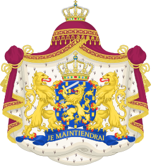
Amsterdam
Amsterdam to miasto kanałów, których pierścień w centrum wpisano na listę UNESCO.
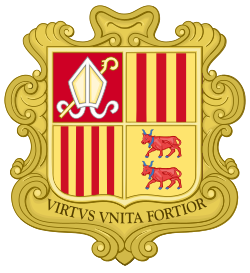
Andora
Andora, położona wysoko w Pirenejach, jest jedną z najwyżej położonych stolic Europy.

Ateny
Ateny to kolebka demokracji i filozofii zachodniej cywilizacji.
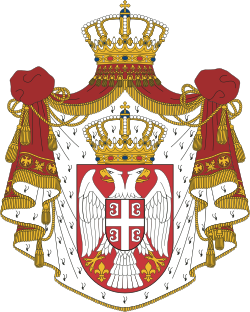
Belgrad
Belgrad to jedno z najstarszych miast Europy, położone u zbiegu Sawy i Dunaju.

Berlin
Berlin to jedno z najbardziej kreatywnych i otwartych miast Europy.
Berno
Berno to spokojna, a jednocześnie zachwycająca stolica Szwajcarii, której stare miasto wpisano na listę UNESCO.
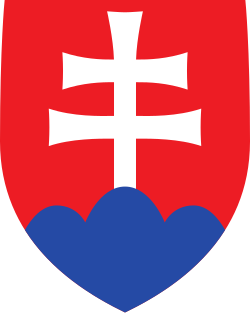
Bratysława
Bratysława to kompaktowa i przyjazna stolica nad Dunajem, idealna na krótki wypad.
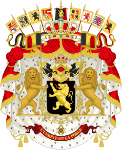
Bruksela
Bruksela to serce Unii Europejskiej, ale przede wszystkim miasto pełne smaku i uroku.
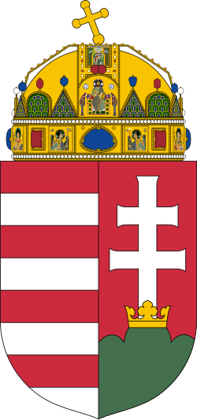
Budapeszt
Budapeszt, nazywany „Perłą Dunaju”, to jedna z najpiękniejszych stolic Europy.
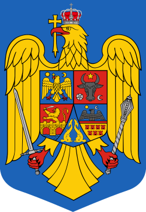
Bukareszt
Bukareszt, nazywany niegdyś „małym Paryżem”, zachwyca mieszanką belle époque i monumentalnej architektury.

Dublin
Dublin to miasto literatury, muzyki i legendarnej irlandzkiej gościnności.
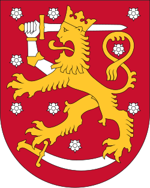
Helsinki
Helsinki to nowoczesna stolica nad Bałtykiem, gdzie design spotyka się z naturą.
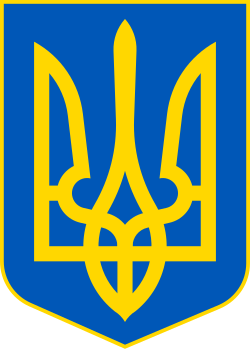
Kijów
Kijów to jedno z najstarszych miast Europy Wschodniej, kolebka Rusi Kijowskiej.

Kiszyniów
Kiszyniów to jedna z najbardziej zielonych stolic Europy, pełna parków i alei.

Kopenhaga
Kopenhaga to stolica hygge – duńskiej sztuki cieszenia się prostymi przyjemnościami.
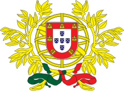
Lizbona
Lizbona to słoneczna stolica położona na siedmiu wzgórzach nad ujściem Tagu.
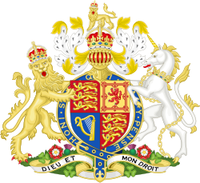
Londyn
Londyn to światowa metropolia, w której historia spotyka się z nowoczesnością.

Lublana
Lublana to jedna z najbardziej zielonych i przyjaznych pieszym stolic Europy.
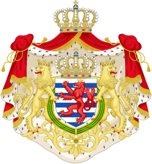
Luksemburg
Luksemburg to stolica położona dramatycznie na skałach nad głębokimi dolinami rzek Alzette i Pétrusse.
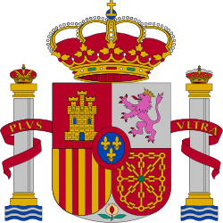
Madryt
Madryt to stolica pełna energii, która nigdy nie zasypia.
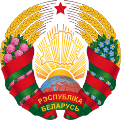
Mińsk
Mińsk to miasto szerokich alei i monumentalnej architektury, która robi ogromne wrażenie.
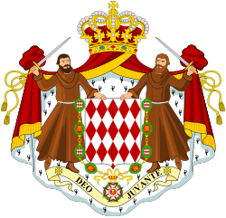
Monako
Monako to synonim luksusu, elegancji i śródziemnomorskiego stylu.
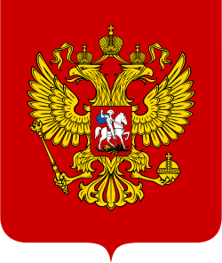
Moskwa
Moskwa to ogromna metropolia o monumentalnej skali i bogatej historii.
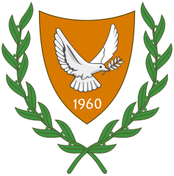
Nikozja
Nikozja to fascynujące miasto, przez które przebiega linia podziału wyspy.
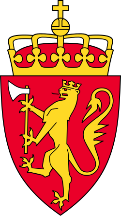
Oslo
Oslo to stolica, w której natura jest na wyciągnięcie ręki – fiord, lasy i góry otaczają miasto.
Paryż
Paryż, Miasto Światła, od wieków inspiruje artystów, pisarzy i zakochanych.

Podgorica
Podgorica to kameralna stolica, idealna na spokojny, niespieszny pobyt.

Praga
Praga, nazywana „miastem stu wież”, to jedna z najpiękniejszych stolic świata.
Prisztina
Prisztina to jedna z najmłodszych i najbardziej dynamicznych stolic Europy, pełna młodych ludzi i energii.

Reykjavik
Reykjavik to najdalej na północ położona stolica suwerennego państwa na świecie.

Ryga
Ryga to największe miasto krajów bałtyckich i prawdziwa perła hanzeatycka.
Rzym
Rzym, Wieczne Miasto, to muzeum pod gołym niebem z prawie trzema tysiącami lat historii.
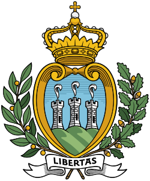
San Marino
San Marino to stolica jednej z najstarszych republik świata, położona na szczycie góry Monte Titano.
Sarajewo
Sarajewo to miejsce, gdzie Wschód spotyka się z Zachodem – meczety, cerkwie, kościoły i synagogi stoją tu obok siebie.

Skopje
Skopje to miasto pełne kontrastów, w którym monumentalne pomniki sąsiadują z osmańskim bazarem.
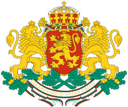
Sofia
Sofia to jedna z najstarszych stolic Europy, której historia sięga czasów trackich i rzymskich.
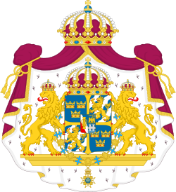
Sztokholm
Sztokholm rozciąga się na czternastu wyspach, dlatego nazywany jest „Wenecją Północy”.
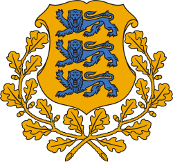
Tallinn
Tallinn ma jedno z najlepiej zachowanych średniowiecznych starych miast w Europie, wpisane na listę UNESCO.

Tirana
Tirana to jedna z najbardziej kolorowych stolic Europy – dosłownie, bo fasady jej bloków pomalowano w odważne wzory i barwy.
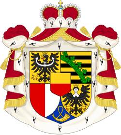
Vaduz
Vaduz to malutka, ale urocza stolica jednego z najmniejszych państw świata.

Valletta
Valletta to jedna z najmniejszych stolic Unii Europejskiej, a całe miasto zostało wpisane na listę UNESCO.
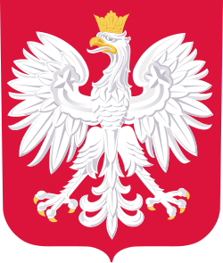
Warszawa
Warszawa to miasto, które powstało z popiołów i dziś tętni nowoczesną energią.

Watykan
Watykan to najmniejsze państwo świata, ale skrywa jedne z największych skarbów sztuki.
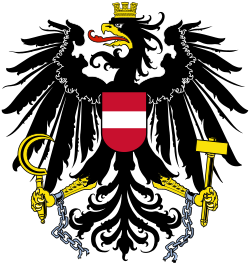
Wiedeń
Wiedeń to stolica muzyki, w której tworzyli Mozart, Beethoven, Haydn i Strauss.

Wilno
Wilno ma jedno z największych barokowych starych miast w Europie Środkowo-Wschodniej, wpisane na listę UNESCO.
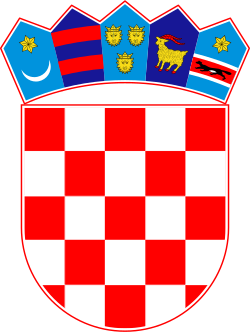
Zagrzeb
Zagrzeb to urokliwa stolica Chorwacji, często niesłusznie pomijana przez turystów spieszących nad Adriatyk.
Brak wyników. Spróbuj innej frazy.